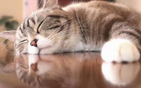

ひらすら寝ています
猫は毎日12〜16時間は睡眠をとると言われています。 ただし、熟睡している時間は意外と少なく、ほとんどが浅い眠りです。 物音がするとすぐ目を覚ますのはそのせいなんですね。
猫は湿度に敏感な動物
猫は湿気を敏感に感じ取ることができる動物だと言われています。 湿度が高くなると、湿気によってヒゲに張りがなくなったり、ヒゲや被毛が湿ってムズムズし、顔を洗うという行動をします。 ヒゲは猫にとって様々なことを感じ取るレーダーのようなもの。湿度によってその感覚が鈍ってしまうのを防ぐために、猫は念入りに顔を洗うようです。
微妙な湿気を感じ取って顔を洗う
雨が降る前であっても湿度は高くなっていますから、その湿気を嫌がって顔を念入りに洗う行動が猫が顔を洗うと雨が降る
と言われるようになった理由のひとつだと考えられます。
勿論、猫が顔を洗う理由は他にもあるので、100%雨が降るかというとそうではありません。
しかし、耳の後ろの方まで念入りに洗っているようなら、雨が降る確率はより高くなるとも言われています。